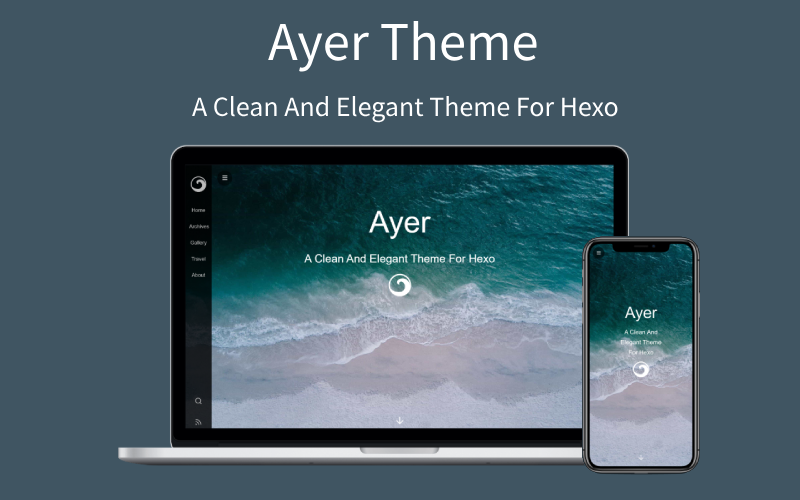

Ayer 是一个干净且优雅的Hexo主题，自带响应式，加载速度很快，该有的功能都有，可配置项也很多，非常适合作为你的博客主题，主题内还附送了6张精美的高清壁纸。欢迎使用和Star支持，如果你在使用过程中有任何疑问或者建议，欢迎联系我！

MathJaxTOC 目录在文章页悬浮，跳转更方便Valine）友盟统计）等统计功能如果想体验手机浏览效果，可以扫一下二维码：
$ git clone https://github.com/Shen-Yu/hexo-theme-ayer.git themes/ayer将博客根目录下的 _config.yml 里的 theme 值修改成 ayer
theme: ayercd themes/ayer
git pullayer目录下的 _config.yml
# 侧边栏菜单
menu:
主页: /
目录: /archives
摄影: http://shenyu-vip.lofter.com
旅行: /tags/旅行/
关于我: /2019/about
# 网站图标和侧边栏logo
favicon: /favicon.ico
logo: /images/ayer-side.svg
# 封面配置
# enable-是否启用封面；path-封面背景图；logo-封面logo
cover:
enable: true
path: /images/cover1.jpg # images目录下附送多张美图，可更换
logo: /images/ayer.svg # 如果不要直接设置成false
# 页面顶部进度条
progressBar: ture
# 文章配置
# 文章太长，截断按钮文字(在需要截断的行增加此标记：<!--more-->)
excerpt_link: 阅读更多...
# 文章分享文字
share_text: 分享
# 分页文字
nav_text:
page_prev: 上一页
page_next: 下一页
post_prev: 上一篇
post_next: 下一篇
# 文章页是否显示目录
toc: true
# 打赏
# 打赏type设定：0-关闭打赏； 1-文章对应的md文件里有reward:true属性，才有打赏； 2-所有文章均有打赏
reward_type: 2
# 打赏wording
reward_wording: '请我喝杯咖啡吧~'
# 支付宝二维码图片地址，跟你设置logo的方式一样。比如：/images/alipay.jpg
alipay: /images/alipay.jpg
# 微信二维码图片地址
weixin: /images/wechat.jpg
# 是否启用搜索
search: true
# RSS订阅(先安装hexo-generator-feed插件，再去博客根目录config进行配置)
rss: /atom.xml
# 评论：1、Valine(推荐)；2、Gitalk
# 1、Valine[一款快速、简洁且高效的无后端评论系统](https://github.com/xCss/Valine)
# 启用Valine必须先创建leancloud应用， 获取 id|key 填入即可
leancloud:
enable: true
app_id: #
app_key: #
# Valine配置
valine:
enable: true # 是否启用
avatar: mp # 头像样式(https://valine.js.org/avatar.html)
placeholder: 给我的文章加点评论吧~ # placeholder
# 2、Gitalk(https://github.com/gitalk/gitalk)
gitalk:
enable: false # true
clientID: # GitHub Application Client ID
clientSecret: # Client Secret
repo: # Repository name
owner: # GitHub ID
admin: # GitHub ID
# fancybox(仅用于相册展示，若需要可配置albums)
fancybox: true
# 访问量统计(不蒜子)
busuanzi:
enable: true
# 友盟cnzz统计(url填js代码src链接)
cnzz:
enable: true
url: #
# 数学公式
mathjax: true
# 网站成立年份(默认为 2019，若填入年份小于当前年份，则显示为 2018-2019 类似的格式)
since: 2019
#是否显示页脚信息(建议保留，有助于本主题的推广)
pageFooter: true$ npm install hexo-generator-searchdb --save然后将以下配置复制到你博客根目录下的 _config.yml 里（注意不是ayer目录下的）:
# Hexo-generator-search
search:
path: search.xml
field: post
format: html$ npm install hexo-generator-feed --save然后将以下配置复制到你博客根目录下的 _config.yml 里（注意不是ayer目录下的）:
feed:
type: atom
path: atom.xml
limit: 20
hub:
content:
content_limit: 140
content_limit_delim: ' '
order_by: -date $ npm uninstall hexo-generator-index --save
$ npm install hexo-generator-index-pin-top --save需要在文章顶部配置
---
title: Gallery
albums: [
["img_url","img_caption"],
["img_url","img_caption"]
]
---用Tocbot解析文章标题并生成目录
将以下配置复制到你ayer目录下的 _config.yml 里：
# Toc
toc: true当然你也可以选择关闭：
toc: false